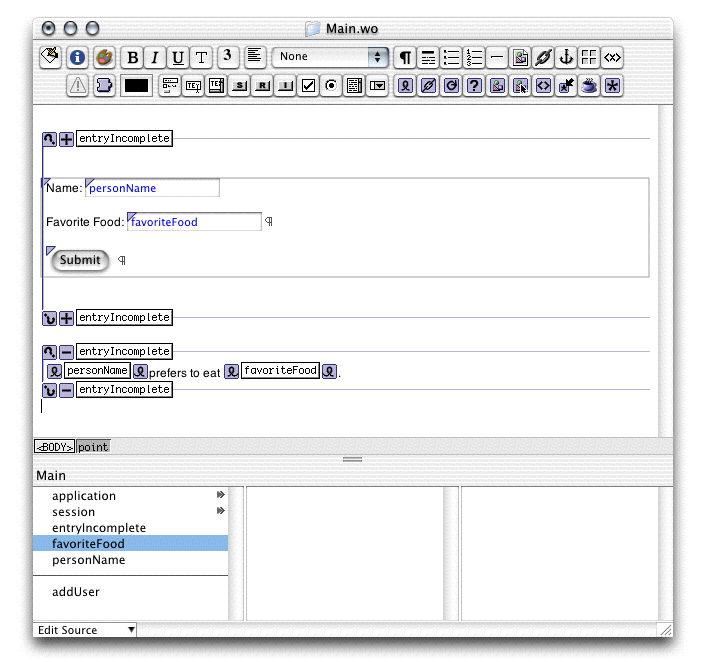

| PATH |

A WOConditional element provides a means of conditionally displaying part of a component. This part could include text, elements, and other components.
The WOConditional element has two attributes: condition and negate.
The condition attribute
is required. While it is syntactically correct to use the values YES or NO for
this binding, the element is only useful when condition is
bound to a Java method that returns true or false (you
can also bind it to integer objects, in which case nonzero values
are interpreted as true and
zero values as false).
If the method evaluates to true,
the contents of the conditional are displayed; otherwise, they are
not. If the negate attribute
it set to true, this
arrangement is reversed: the contents are displayed only if the condition attribute
evaluates to false.
You can use a pair of WOConditionals to ask the user for input and then display the information she entered. This is the method you'll use to capture and display user data.
Add the following variable to Main.java:
protected boolean entryIncomplete;
You can use WebObjects Builder's Edit Source menu or add the variable directly to the class file. (If you use WebObjects Builder, be sure to deselect the options under "Create source code for" in the Add Key dialog.)
This variable should be initialized
to true because the variables
are empty when the page is first displayed, so the entry is incomplete.
Otherwise, the fields would not be displayed the first time the
page is shown. Initialize the variable in the component's constructor.
public Main(WOContext context) {
super(context);
entryIncomplete = true;
}Also
modify the addUser method
to check the form properties and update the value of entryIncomplete.
public WOComponent addUser() {
System.out.println("'addUser' button was clicked.");
if (personName.equals("") || favoriteFood.equals("") {
entryIncomplete = true;
}
else {
entryIncomplete = false; // the entry is now complete
}
return null;
}Main.java.Main.wo in
WebObjects BuilderThe
fields and the submit button should be displayed only while entryIncomplete is true.
Select the form and choose WOConditional from the WebObjects menu.
(You can select the form by clicking inside it and then clicking
the <WOForm> tag
in the path pane, located below the content editor.)
condition attribute
of the WOConditional to the entryIncomplete instance variable.As
long as entryIncomplete evaluates
to true, WebObjects displays
the WOConditional's content.
prefers to eat "
between the WOStrings (note the leading and trailing spaces).value attribute
to personNamefavoriteFoodcondition to entryIncomplete.
Click "+" on the WOConditional to invert its meaning. It changes
to a "-" and the contents of the second WOConditional are displayed
only when the value of the entryIncomplete variable
is false.Figure 5-4 WOConditional elements
The first time the Main component is generated, you see the
same page as the last version of the application, because entryIncomplete is true and
the contents of the first WOConditional are displayed.
Once the user enters data and clicks the submit button, the addUser method
determines if she entered text in both text fields and, if you so,
sets entryIncomplete to false.
Since the addUser method
returns null, the page
is redrawn with the new variable settings, and this time the contents
of the other WOConditional are displayed because the variable changed.
© 2001 Apple Computer, Inc.